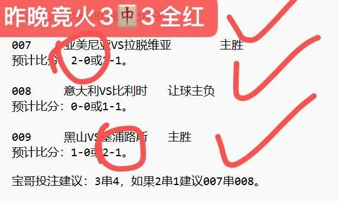
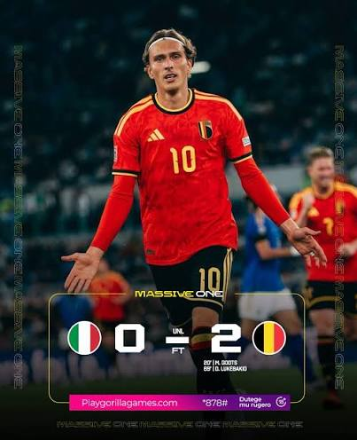
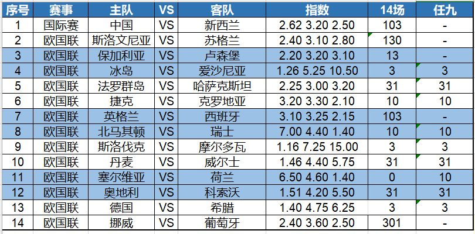

昨晚竞火3中3全红，盘火3中2收米！今晚继续约~~~

昨晚欧国联A组小组赛，意大利主场0-2不敌比利时，重新执掌国家队教鞭的曼奇尼未能取得开门红。霍茨和替补上场的卢克巴基奥上下半场各进一球。对目前的意大利国家队来说，换帅并不能解决太多问题。真不愧是欧洲的中国队！

另一场欧国联小组赛，齐达内执教的法国队客场1-0小胜土耳其，姆巴佩接奥利塞的助攻，打进唯一进球。看来，新一届的法国国家队在齐达内带领下，将向两年后的欧洲杯发起冲击。姆巴佩的表现将会越来越好。
今天第一场比赛关注欧国联A组，英格兰主场迎战西班牙。这是自 2024 年欧洲杯决赛以来，两队首次在成年男子比赛中交锋，当时西班牙在柏林以 2-1 击败英格兰。西班牙在7月份世界杯决赛击败阿根廷夺冠后，以卫冕欧洲冠军和新晋2026年世界杯冠军的身份前往伦敦。英格兰队主教练托马斯·图赫尔率领三狮军团在世界杯上取得了季军。然而，英格兰队今天将面临阵容的重大调整，科尔·帕尔默和德克兰·赖斯等关键球员因伤病和轮休问题缺席。正常情况下，西班牙不败概率更大一些。
第二场继续关注欧国联A组的比赛，塞尔维亚主场迎战荷兰。塞尔维亚首战以1-2惜败希腊，目前在小组中排名第四。他们在国际赛场上遭遇三连败。荷兰由哈维·埃尔南德斯执教的首场比赛，凭借科迪·加克波在伤停补时阶段的进球，1-1战平德国，状态并不是太好。本场比赛，荷兰做客，要提防不胜的结果。

14场：103、130、13、3、31、10、103、10、3、31、0、31、3、301
任九：-、-、-、3、31、10、-、10、3、31、10、31、3、-
欢迎大家收藏宝哥首页，请分享给好友或转发到朋友圈，让更多人看到我。
安卓用户可以下载APP，更便捷看到宝哥每天的动态！